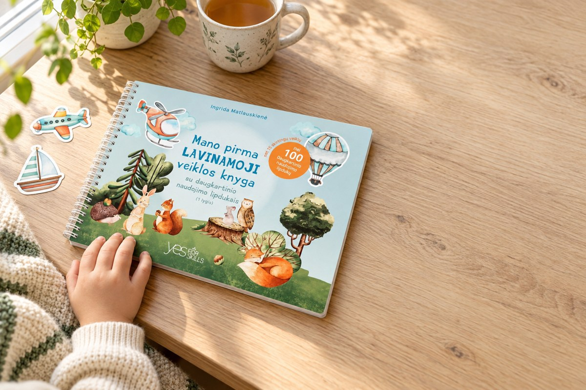
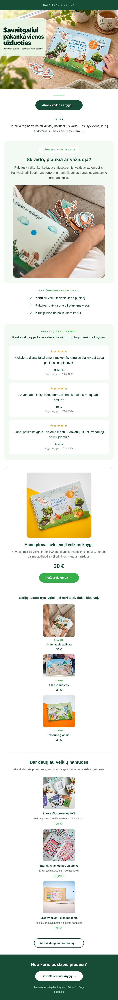
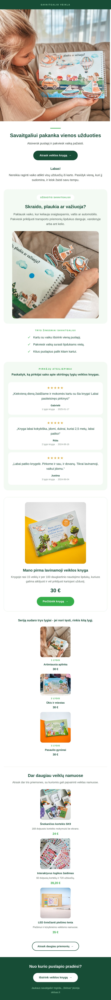

Skilsas C04 - „Šį savaitgalį atsiverskime vieną puslapį"
Siuntimas 2026-09-25 (pn). Copy per lt_copy.py (gpt-6-astra). Kainos ir likučiai pertikrinti 2026-09-22.
Atidaryti gyvą laišką →
AI hero (alternatyva, dar neįdėta į laišką)
Viršelis atkurtas 1:1 iš tikrų nuotraukų (img-to-img), bet oranžinio ženkliuko
smulkus tekstas kiek iškraipytas. brand.md sako hero - tikros skilsas.lt nuotraukos,
todėl laiške kol kas palikta reali nuotrauka.

Mobile peržiūra (375 px)

Desktop peržiūra (600 px)
